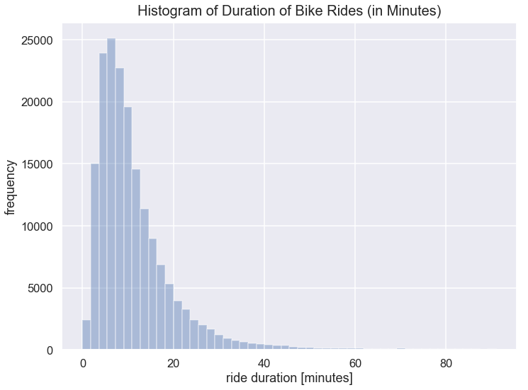

When to Use Histogram Plots
- Jun 13 • 8 min read
- Key Terms: histogram
Histograms visualize the shape of the distribution for a single continuous variable that contains numerical values. A histogram displays data using bars of different heights.
Histograms are slightly similar to vertical bar charts; however, with histograms, numerical values are grouped into bins. For example, you could create a histogram of the mass (in pounds) of everyone at your university. In doing so, you'd need to create bins so that the mass of people from 40 pounds to 60 pounds is one bin, and 60 pounds to 80 pounds is another bin, and so forth.
In histogram plots, the bars should should have no spacing between them.
Similar to box plots, histograms visualize the distribution of a dataset. However, box plots are often more ideal for identifying outliers, if any exist.
Below, I'll walk through a few examples below of when histograms are useful.
Import Modules
import seaborn as sns
import matplotlib.pyplot as plt
import pandas as pd
% matplotlib inline
Makes all figure sizes larger.
sns.set(rc={'figure.figsize':(11.5, 8.5)})
Example: Bay Area Bike Share Ride Duration Data
In the San Francisco Bay Area, a company Motivate operates a network of bikes across several cities. You can walk up to a bike, pay and unlock it from a dock, ride it to your destination, and park it in another nearby dock.
There's an option to become a member (aka subscriber) in which you pay a monthly subscription fee that includes unlimited rides that are up to 30 minutes long. When someone becomes a member, they can submit information on their birth year and gender.
For each ride, Motivate records data on the start time, end time, member birth year and member gender.
I'm curious to learn more about the duration of bike rides by customers.
Load Dataset on May 2018 Rides
df = pd.read_csv('201805-fordgobike-tripdata.csv')
Preview Some Data
df[['start_time', 'end_time', 'duration_sec', 'member_birth_year', 'member_gender']].head()
| start_time | end_time | duration_sec | member_birth_year | member_gender | |
|---|---|---|---|---|---|
| 0 | 2018-05-31 21:41:51.4750 | 2018-06-01 13:28:22.7220 | 56791 | NaN | NaN |
| 1 | 2018-05-31 18:39:53.7690 | 2018-06-01 09:19:51.5410 | 52797 | 1983.0 | Male |
| 2 | 2018-05-31 21:09:48.0150 | 2018-06-01 09:09:52.4850 | 43204 | NaN | NaN |
| 3 | 2018-05-31 14:09:54.9720 | 2018-06-01 08:48:17.8150 | 67102 | 1979.0 | Male |
| 4 | 2018-05-31 16:07:23.8570 | 2018-06-01 08:28:47.2020 | 58883 | 1986.0 | Male |
Make New Column for Ride Time in Minutes
They record duration of rides in seconds because it's a granular metric of duration. However, when we discuss bike rides with friends, we typically say 20 minutes, not 1200 seconds.
Below, I create a new column to convert the duration of rides in seconds into minutes.
df['duration_minutes'] = df['duration_sec']/60
View Descriptive Statistics of Ride Time in Minutes
Below, we can see the shortest ride was 1 minute and the maximum was 1436 minutes - that's almost a 24 hour ride!
The 99th percentile value is 91.5 minutes, which is over three times as large as the 95th percentile value of 30.63 minutes.
df['duration_minutes'].describe(percentiles=[.25, .5, .75, .9, .95, .99, .999])
count 179125.000000
mean 14.248406
std 39.942553
min 1.016667
25% 5.700000
50% 9.133333
75% 14.500000
90% 22.600000
95% 30.633333
99% 91.500000
99.9% 687.312667
max 1436.800000
Name: duration_minutes, dtype: float64
Plot Histogram of Ride Time in Minutes
Below, I limit my histogram to show rides up to 91 minutes because that's still the 99th percentile. I don't want my visualization to be distorted by outliers. A focus on up to the 99th percentile will help us draw insights on the patterns of the majority of riders.
The Seaborn visualization library in Python automatically determines bin size using the Freedman-Diaconis rule. This is a very convenient feature to have!
sns.set_context("talk")
ax = sns.distplot(df['duration_minutes'], kde=False, color='b', hist_kws={"range": [0, 91]})
ax.axes.set_title("Histogram of Duration of Bike Rides (in Minutes)", fontsize=20, y=1.01)
ax.set(xlabel='ride duration [minutes]', ylabel='frequency');

Interpretation of Bike Ride Duration Histogram
The highest occurence of bike rides are around 7 minutes.
Most bike rides are just from 3 - 15 minutes which I consider fairly short rides. Therefore, I could theorize that bay area bike share members infrequently use these bikes for long strenous exercises riding long distances. Rather, they likely use bike rides for short distances.
The histogram illustrates positive skew. This means there's a long tail on the right side of our peak. Because of this skew, the mean ride duration is larger than the median ride duration. Below, I printed out the mean and median so we can verify that while the mean ride duration is 14.24 minutes, the median is smaller at 9.13 minutes.
df['duration_minutes'].mean()
14.248405768783414
df['duration_minutes'].median()
9.133333333333333
Example: Age of Bike Riders
I'm curious to learn about the age distribution of members of the bay area bike share program.
Create New Column for Age (in Years)
They record the birth year of members. However, it's easier to interpret the age in years rather than year of birth.
df['age_years'] = 2018 - df['member_birth_year']
View Descriptive Statistics on Riders' Age
Below, we can see 18 is the youngest rider and the oldest is 129. However, the 99th percentile is 66 years old, nearly half the age of the maximum rider.
df['age_years'].describe(percentiles=[.25, .5, 0.75, 0.99, 0.9999])
count 167376.000000
mean 35.813575
std 10.320561
min 18.000000
25% 28.000000
50% 33.000000
75% 41.000000
99% 66.000000
99.99% 118.000000
max 129.000000
Name: age_years, dtype: float64
Plot Histogram of Age of Bike Riders
I limit the range of the x-axis (age) to be just 18 to 80 so we can more easily visualize the bulk of riders, and disregard the outliers well over 80.
df_age_members = df[df['age_years'].notnull()]['age_years']
ax2 = sns.distplot(df_age_members, color='g', kde=False, hist_kws={"range": [18, 80]})
ax2.axes.set_title("Histogram of Age of Bike Members", fontsize=20, y=1.01)
ax2.set(xlabel='age [years]', ylabel='frequency');

Interpretation of Histogram of Age of Bike Riders
The most frequent age group of riders is people aged 24 - 35 with a peak around 29.
Past roughly 35 years of age, as people get older, they're less likely to be a member of the bay area bike share program. However, there's still several thousand members who are 55 years or older.
There's a wide range of age of bike riders - from 18 to 60+.
This histogram is positively skewed too. There's a long tail of bins with ever-decreasing frequency that extend to the right of our peak.